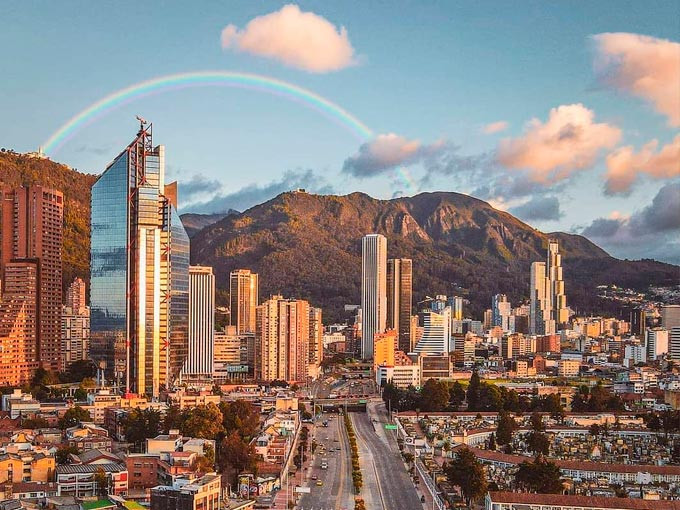
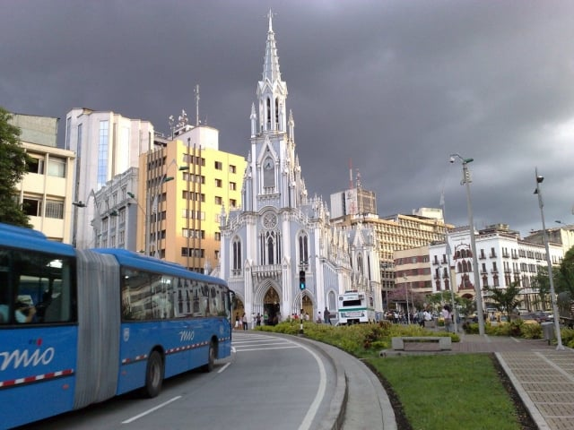
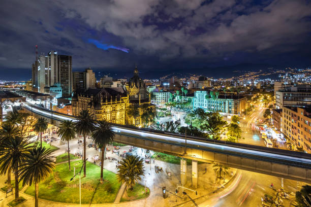
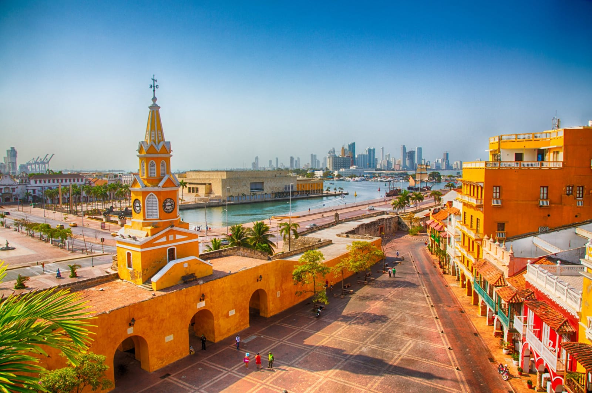

✈ VIAJA POR COLOMBIA CON HASLYN ✈
↪︎Colombia es un país que cautiva a sus visitantes con una riqueza cultural, natural y gastronómica inigualable. Colombia ofrece una variedad de destinos que prometen aventuras inolvidables. Aquí te presentamos algunas ciudades que podrás visitar en este país.
-
Bogotá
La capital de Colombia es un destino lleno de historia y modernidad. Con su impresionante arquitectura colonial, museos de renombre y una vibrante vida nocturna, Bogotá tiene algo para todos.
 -
Cali
Cali, conocida como la "Sucursal del Cielo", es la capital del Valle del Cauca y es famosa por su vibrante cultura de salsa, su clima cálido y su vida nocturna animada. Destacan lugares como el Parque de los Gatos y el Cristo Rey
 -
Medellín
Conocida como la "Ciudad de la Eterna Primavera", Medellín es famosa por su clima templado y su innovación urbana.
 -
Cartagena
Cartagena es una ciudad costera conocida por su impresionante ciudad amurallada, sus playas caribeñas y su rica historia colonial.
 -
Santa Marta
Santa Marta, una de las ciudades más antiguas de América, se encuentra en la costa caribeña y es famosa por su hermosa bahía y playas. Es la puerta de entrada al Parque Nacional Natural Tayrona, ideal para disfrutar de la naturaleza y la biodiversidad.

-
San Andres y Providencia
San Andrés y Providencia son un archipiélago caribeño conocido por sus aguas cristalinas y playas paradisíacas. San Andrés ofrece una mezcla de cultura afrocaribeña y vida nocturna, mientras que Providencia es más tranquila y perfecta para el ecoturismo.

GUIA PARA CONOCER COLOMBIA
Esta guía sirve para ayudarte a planificar tu viaje por Colombia con todo lo que necesitas tener en cuenta. Al pretender que sea tan completa, está en proceso de construcción y la iremos completando y ampliando con posts específicos de cada zona/región.
Si tienes alguna duda o hay algo que no está en la guía y te gustaría que estuviera, no te cortes y déjanoslo en los comentarios.
Conoce más sobre estos maravillosos destinos
- ¿Te interesa saber más sobre Bogotá? Ingresa aquí
- ¿Te interesa saber más sobre Cali? Ingresa aquí
- ¿Te interesa saber más sobre Medellín? Ingresa aquí
- ¿Te interesa saber más sobre Cartagena? Ingresa aquí
- ¿Te interesa saber más sobre Santa Marta? Ingresa aquí
- ¿Te interesa saber más sobre San Andres? Ingresa aquí